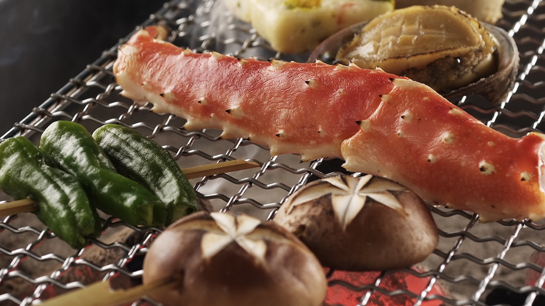
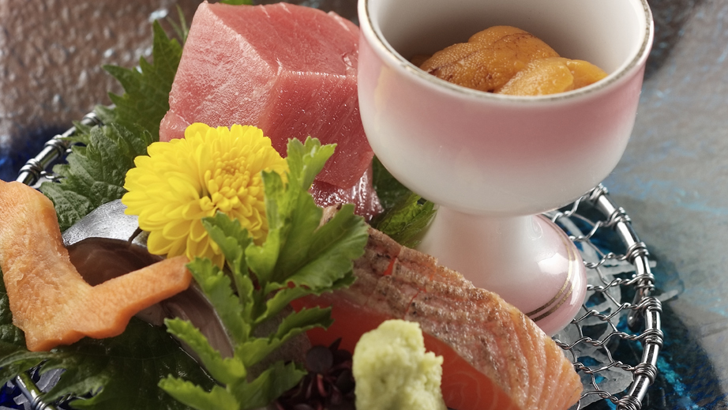
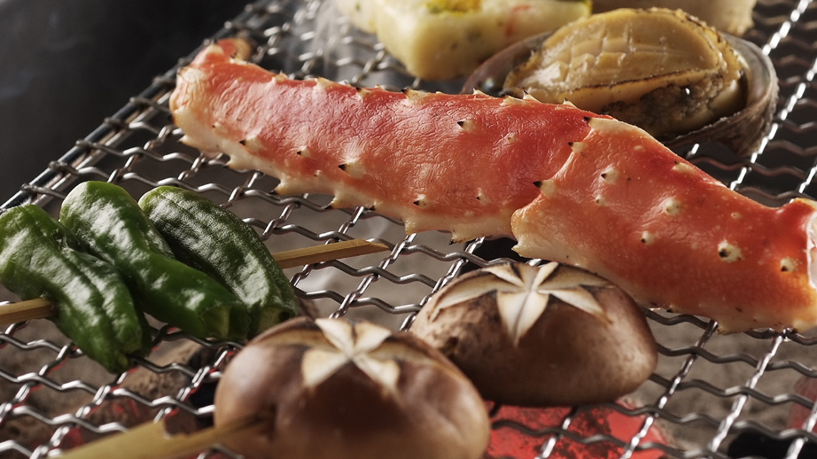
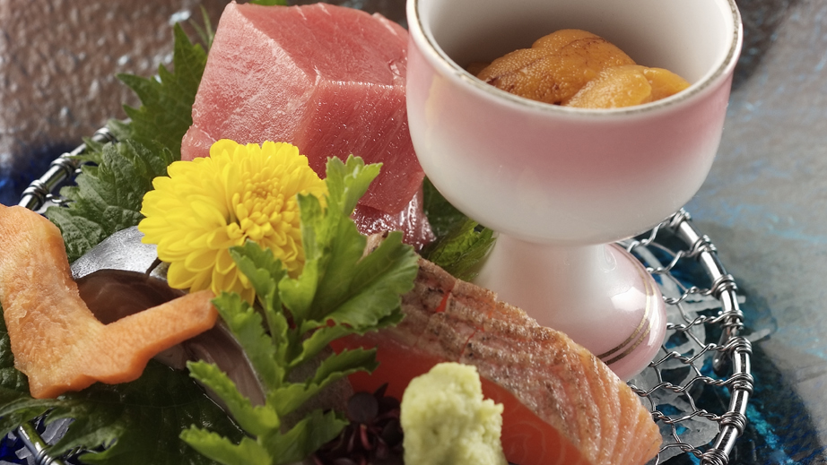

丸駒温泉旅館のお食事
北海道は国内でも屈指の食の宝庫と言われますとおり周りを海に囲まれた豊かな漁場が豊富に存在します。豊かな水と肥沃な大地からは、穀物、
野菜、果物など、大地の恵みに溢れていて、ご提供するお料理の幅を広げてくれます。
囲炉裏会席
ぱちぱちと音を立ててはじける炭火、温かい雰囲気と語らいの中で和気あいあいと。秘湯 ならではの囲炉更会席
~部立一例~
珍 味/平目縁側の山受和え
前 菜/四点盛り合わせ(自家製行者にんにく森油漬け他)
造 里/雲丹 牡丹海老 サーモン 〆購帆立貝要一式
焼き物/山女魚姿焼き
網焼き※/蟹味噌甲鐵帆立貝殼统骨付きソーセージ ごまいチキンみそ焼き野菜色々
蒸し物/茶碗蒸し
食 事/栗と背の釜めし
汁 物/なめこ汁
香の物/盛り合わせ
水菓子/巨峰ゼリー
※冬季は「網焼き」が「料理」にかわります。
 



特別会席
食の宝庫 北海道の旬の毛ガニや牛などの豪華食材から、料理長が特別に吟味した特別和食
会 席
~献立一例~
珍 味/帆立貝と玉葱のピリ辛和え
前 菜/四点盛り合わせ(自家製行者にんにく醤油漬け他)
御造里/雲丹本マグロ 秋刀魚帆立貝要一式
焼き物/山女魚姿焼き
煮 物/炊き合わせ
鍋 物/道産和牛の陶板焼き
蒸し物/茶碗蒸し
酢の物/毛蟹
食 事/白御飯
汁 物/土瓶蒸し
香の物/盛り合わせ
水菓子/巨峰ゼリー
丸駒会席
素材に吟味を尽くして四季の恵みを味わう楽しみ、北海道の食材を中心に季節を感じる会 ならではの囲炉更会席
席料理
~献立一例~
先 付/鮭の南蛮漬け
前 菜/四点盛り合わせ(自家製行者にんにく森油漬け他)
御造里/牡丹海老 サーモン 帆立貝〆鯖妻一式
焼き物/山女魚姿焼き
煮 物/炊き合わせ
鍋 物/四元豚の塩鍋
蒸し物/茶碗蒸し
食 事/白御飯
汁 物/なめこ汁
香の物/盛り合わせ
水菓子/巨峰ゼリー
丸駒ランチ
贅沢に四季の味わいを彩りよく盛り付けた丸駒弁当、小晴とともにゆったりとご摂食
(丸ランチは「日帰りプラン」のお食事となります)
朝食バイキング
朝食バイキングは地元北海道の食材を中心とした和洋25品をご用意
【ご朝食提供時間:7時から9時まで】
食物アレルギーへの対応をご希望
のお客様へ
食物アレルギー症状のある方は、朝食バイキング会場ご利用時を除き、ご予約時にお知ら せください。
その場合、できる限りアレルゲンの除去に努めた料理を提供させて頂きますが、
アレルゲンの除去を保証するものではございませんのでご了承ください。
また、朝食バイキング会場におきましては、特定原材料7品目(卵、乳、小麦、えび、か に、そば、落花生)の使用について表示しております。
これらは表示している特定原材料がその料理に使用されていることを明記したものであ り.
記載のない特定原材料がその料理に含まれていないことを保証するものではありません。
アレルゲンの除去が保証されないとお困りのお客様におかれましては、お客様の安全を第 一に考え、
やむを得ず食事の提供をお断りすることがございます。
その場合、御自身での食事の持ち込みをお受けいたしますので、事前にお申し出くださ い。
以上を踏まえ、食事会場の御利用に際しては、お客様にて最終的なご判断を頂きますよう お願い致します。